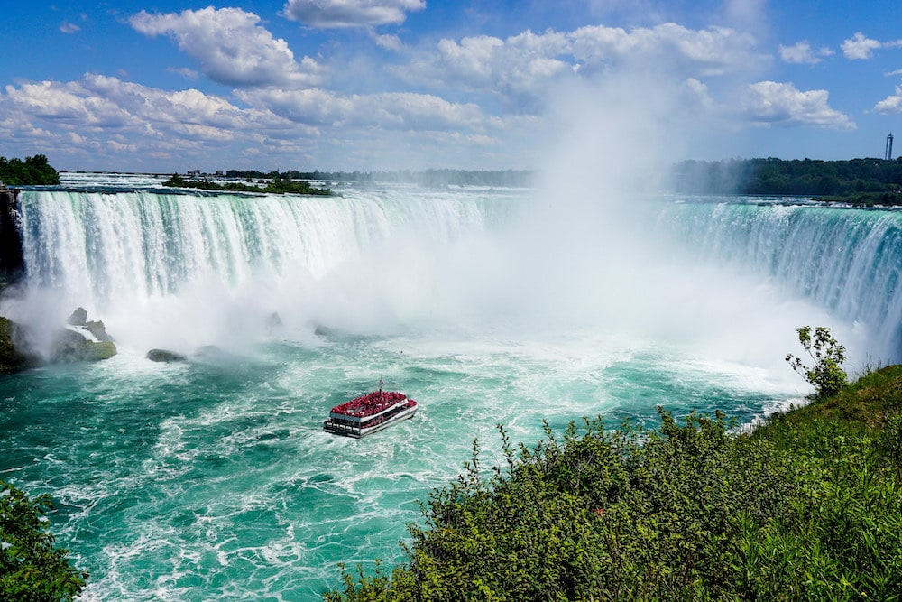

Winter Sports
If you are interested in winter sports such as skiing, Canada is the perfect place to visit for a
vacation.
With its beautiful nature, it is a astonishing place to visit.
Niagara Falls
If you are interested in nature, you are sure to know about the world's biggest waterfalls. Niagara
falls is a perfect place to visit for those who are interested in new experiments.
Natural Beauty
Canada has many natural sites that are lovely to visit. It has many secluded areas where the nature is
preserved as it has been for the past thousands of years. You should not go wondering into the nature if
you are afraid of encountering some grizzly bears!

Cape Town
As the capital city of South Africa, Cape Town is a cultural highlight that is a place worth visiting
while staying at South Africa. You will regret it if you do not visit this captivating city when you
visit South Africa. Cape Town is located in the Western Cape provinde at the foot of the famous Table
Mountain.
It is a worthwile climb if you are interested in mountain climbing.
Kruger National Park
Are you interested in seeing a lion up front? Do not choose a Safari tour in the Kruger National Park if
you are afraid of wild beasts that can eat you in one go! But lions are not the only wild animals that
you will see when visiting Kruger National Park. There are buffalos, leopards, rhinoceros, and a herd of
elephants to be seen as well.

History
If you are interested in history, surely you are aware of the Greece hisotry and its importance. Greece
has so many historical buildings and culturally important sights that it would wake you weeks to just
visit them briefly.
Beach
Although Greece is known for its hisotrical significance, do not understimate its beautiful beaches. If
you are looking for some place to relax, Greece's beaches are the perfect place. You can always enjoy
the breath from the Mediterranean Sea while walking on a beautiful olive garden alongside the beach.

Nature
The Netherlands has one of the most beautiful natural landscapes in Europe, or even in the world. It has many beautiful ponds that are lovely to visit. The weather is great most of the times and it is great for hiking or relaxing.
Bird Watching
Since the Netherlands has many ponds, there are many places for birds to visit. If you are interested in bird watching, then you can visit the birds there. Isn't it great?
Canary Islands
Have you ever heard of Canary Islands? Of course you have! Canary Islands are a collection of numerous closely places islands named Tenerife, Lanzarote and Fuerteventura. The sun is always shining on the sky in the Canary islands. There is no clouds to block it no matter when you visit. So, if you are intereseted in a relaxing vacation on the beach, Canary islands are the perfect destination for you.
Andalusia
If you are a fan of medival history, beautiful warm beaches, exotic markets, and much more? Then visiting Andalusia is a very tempting choice. With many things to do at the edge of Mediterranean sea, there is something to do for everyone.
Shopping
Maybe you want to go somewhere to be surrounded by so many shopping malls and shopping centers that you wouldn't be able to choose which mall or shop to enter. You can defenitely spend a full day or even multiple days going through different shopping centers and enjoy many options and many great offeres especially if you are visiting at a holiday time!
Culture
Maybe you don't intend to spend just all of your time going through so many shops. Maybe you are more interested in culture. No worries. There are many museums and libraries to visit and much to do. And don't forget to visit the statue of liberty when you are at it.